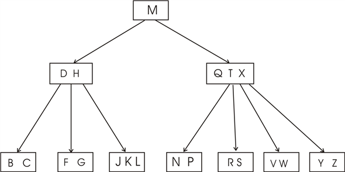
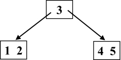
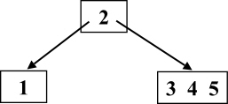
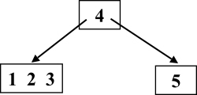
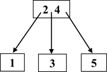
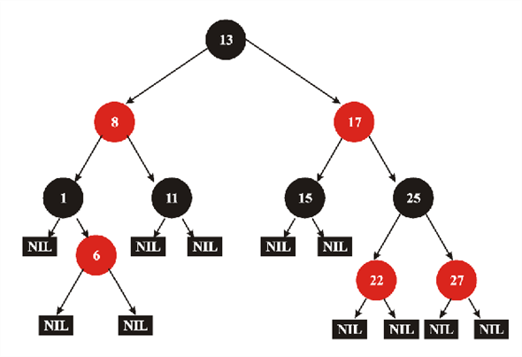
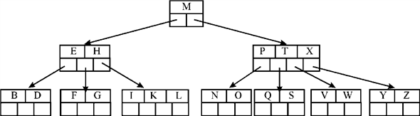

According to the definition of B-Tree, there are lower and upper bounds on the number of keys a node can have. These bounds are represented using the minimum degree t, where .
• Except the root node, all other nodes should have minimum
 keys.
keys.
• Every internal node except the root will have minimum of t children.
• In a nonempty tree, the root node must have minimum one key.
• Every node can have maximum  keys.
keys.
• Every internal node can have maximum of 2t children.
If the degree of t is 1, the minimum number of nodes will
be 0 and the B-tree will be an empty tree. A nonempty B - tree
should contain at least one key, thus making degree .
.
Hence the minimum degree of and the
minimum degree of is not
allowed.
The following is the given B-tree:

According to property 5 B-tree
a. Every node other than root must have at least keys.
b. Every node may contain at most keys.
c. And t ≥ 2
Finding value of t :
• Every node in the given tree has 2 keys or 3 keys.
• Therefore, least number of keys, t-1 ≤ 2 and maximum number of keys, 2t-1 ≥ 3
i.e. t ≤ 2 +1 and 2t ≥ 3+1
t ≤ 3 and 2t ≥ 4
t ≤ 3 and t ≥ 2
• From the above two in equations, 2 ≤ t ≤ 3
• So, the value of t cannot exceed 3 as some nodes have only 2 keys.
Therefore, the given tree is a legal B-tree, for t =2 or 3.
Since minimum degree, t = 2,
• Every node except the root in the B-tree must have at least 1 key (i.e. t-1).
• Every node can have at most 3 keys (i.e. 2t-1).
• That is, a node may have 1 key or 2 keys or 3 keys.
All legal B-trees that represent {1, 2, 3, 4, 5} and satisfy the above conditions are shown below:
i)

ii)

iii)

iv)

Supposed condition:
If the black node assimilates the red children and incorporates its own black children at that place in the Red Black Tree, then a new data structure is formed.
Red Black Tree is a special type of tree in which each node contains an extra bit for the storage of the color of that node. Every node in the Red Black Tree contains five fields p for parent, left for left child, right for right child, key for data value and color for color of the node.
The properties of Red Black Tree are as follows:
1. In this tree each and every node is either painted with red color or painted with black color.
2. The root node of the Red Black tree is always black. (This rule is not right in every condition. Since the root can always be changed from red to black, but not true for the change of color from black to red always)
3. All leaf nodes (NIL) are painted in black color.
4. For each red node its children are always black.
In the Red Black Tree each path from a node to its leaf contains equal number of black nodes.

Fig: Red Black Tree
B-Tree is a tree data structure in which each node can have at least two children and special attributes, that is, it stores the number of keys currently in node with the keys themselves. It also contains a boolean field which to confirm that if a node is internal node or the leaf node.

Fig: B-Tree
As the root node in a Red Black tree is black, we can say that if a black node would absorb its red children and incorporate them with its black children, we would get a new data structure.
This data structure would be a generalized version of Binary search tree, a tree with features similar to B Tree. It is because if all the black nodes would absorb its red children and make their children as its own, then the red black tree’s height will reduce and there will be many nodes in a single level. As per the definitions of B-Tree, this description suits well.
Hence, in a Red Black Tree, if the black node absorbs its red children and incorporate its own children in that place, then the new formed data structure will be the B-Tree.